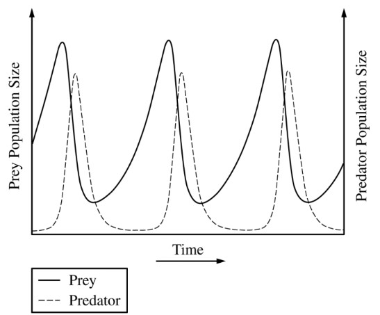

The graph below shows a model of population changes over time in a predator and its prey.

Which of the following data would be most helpful in predicting possible disruptions to the relationship between
the predator and its prey?
Any increase in prey or predator population size would discrupt the relationship depicted in the graph.
The time of day is not important since the time scale for the relationship is likely over the course of months or years, not hours.
The change in hunting age may impact the relationship, but not at the scale of changing the number of predators.
Metabolic rates may also be important, but again, at a much lesser extent than the number of prey and predators.